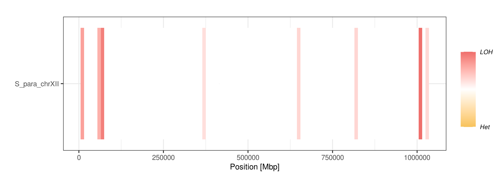

Run JLOH with a test dataset
If you wish to perform a test run to see the output files and their structure, we have prepared a test dataset starting from the NCBI genomic read accession SRR12033503 and the sequence of the chromosome XII of S. paradoxus. This dataset can be found in the test_data folder, within the installation directory.
File |
Format |
Description |
|---|---|---|
S_para.chrXII.fa |
FASTA |
Reference sequence |
out.fs.bam |
BAM |
File with mapping results |
out.ff.vcf |
VCF |
File with called SNPs |
Note
A key feature of the VCF file used here is that it contains allele frequency (AF) annotation in the FORMAT (8th) field. This is crucial for jloh extract to work.
Get LOH blocks
To infer LOH blocks from the test dataset, you first should model the distribution of SNP densities across the genome with jloh stats.
To do so, use the following command:
jloh stats --vcf out.ff.vcf
This command produces the quantiles of heterozygous and homozygous SNP densities. See Modelling SNP density for details. You must choose a threshold SNP density for heterozygous SNPs and one for homozygous SNPs.
Then, we proceed inferring LOH blocks from the dataset. This is done with the jloh extract module. We used this command:
jloh extract \
--vcf out.ff.vcf --bam out.fs.bam --ref S_para.chrXII.fa \
--min-snps-kbp 2,5 --output-dir jloh_out
The output will be placed in the jloh_out directory. The most important file produced by this command is the jloh.LOH_blocks.tsv file. This file contains the detected LOH blocks based on the distribution of heterozygous and homozygous SNPs. It is accompanied by a BED file representing the same intervals in a 0-based half-open fashion.
The jloh.LOH_blocks.tsv file can be passed to the jloh plot module to represent LOH graphically with this command:
jloh plot \
--one-ref \
--loh jloh_out/jloh.LOH_blocks.tsv \
--het jloh_out/jloh.exp.het_blocks.bed \
--contrast max
Due to the low variation in the test dataset, we have increased the --contrast to the maximum value to highlight potential LOH regions. The --one-ref option indicates that the jloh extract was run in default mode with only one reference FASTA file.
Here’s how the plot should look like.
